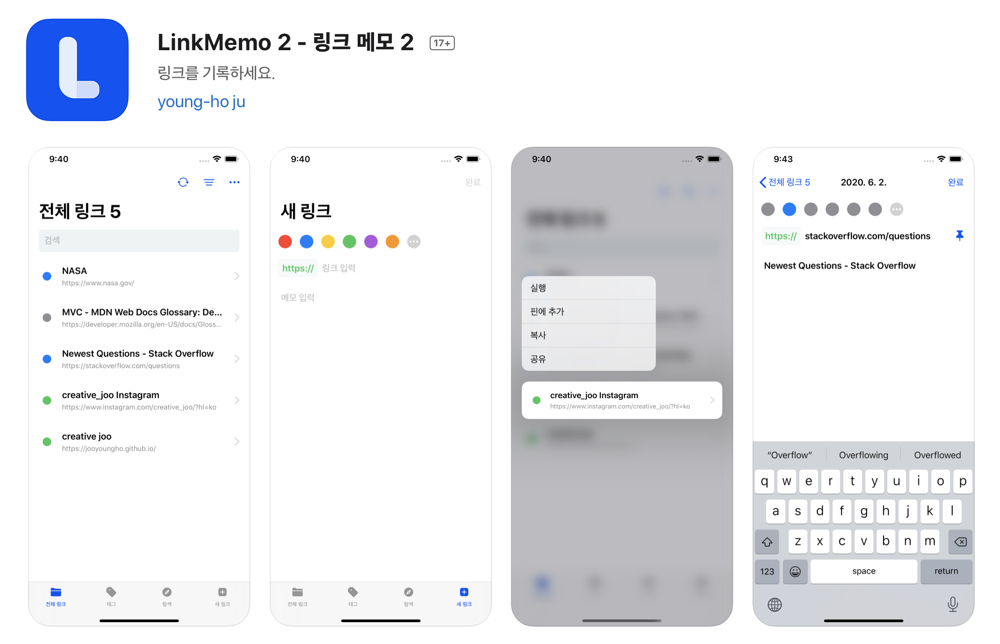
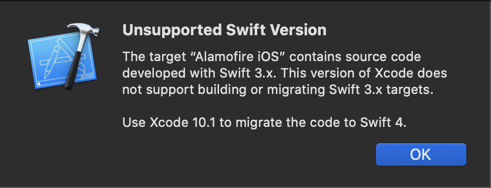
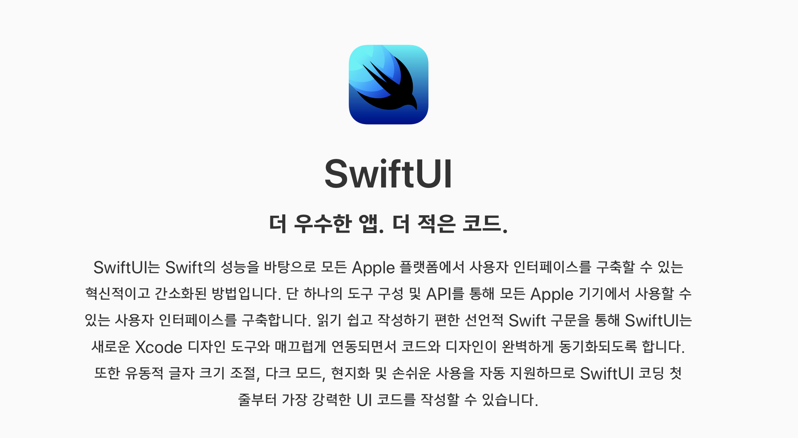
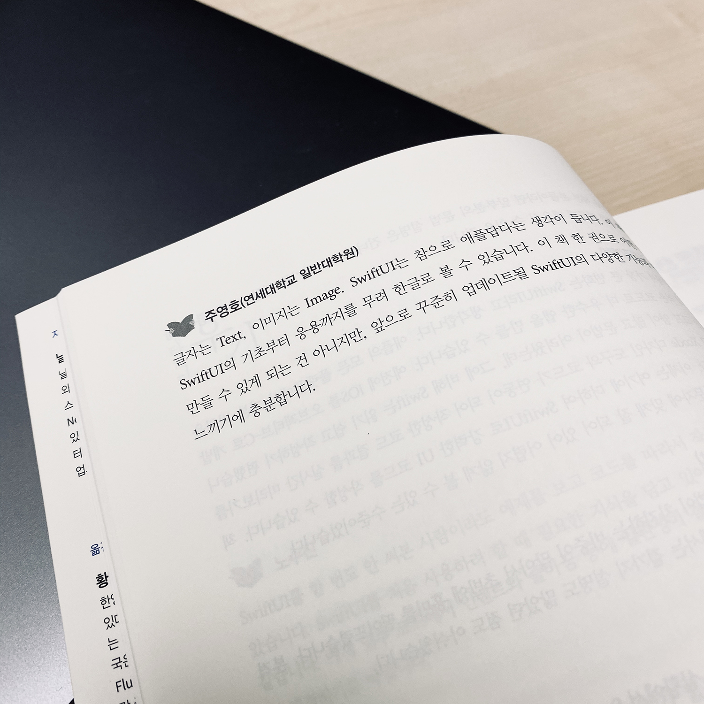
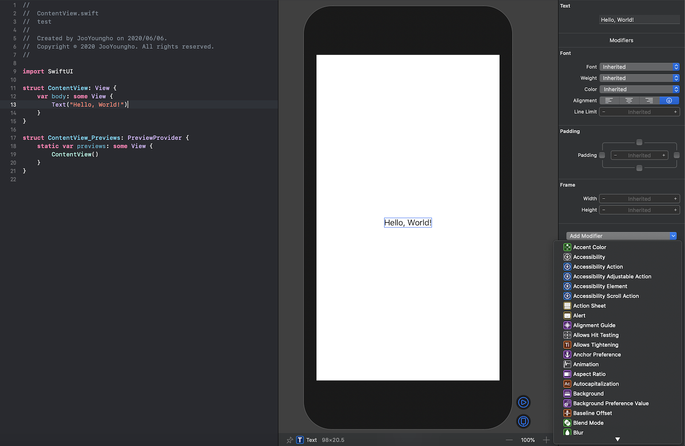
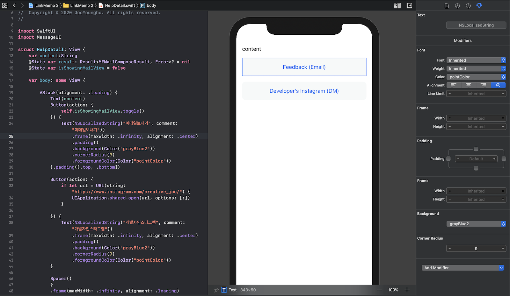
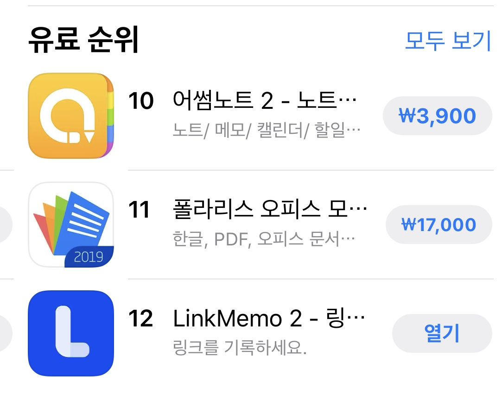

Project: LinkMemo 2
apps.apple.com/app/id1516311939

초보 개발자의 SwiftUI 앱 개발기
2년 전, iOS 앱 개발에 입문했던 필자는 당시 "LinkMemo"라는 앱을 출시했었다. 비록 처음 만들어 부족한 부분이 많았지만, 생산성 6위(아주 잠깐이지만)까지 했었고 일본, 중국에 꽤 인기가 있었다. 그러다 어느 날 갑자기 심심해서 "LinkMemo" 앱의 프로젝트를 Xcode로 연 순간 나는 수백 개의 경고-오류를 보게 되었다. 그렇다. 2년 만에 iOS는 많이 변했나 보다. 아니면 내가 그 당시 코드를 정말 못 짰거나. 어쨌든 나는 새로이 LinkMemo 2를 제작하기로 다짐했다.

▲ 지원되지 않는 Swift 버전
되도록 최신 기술로 앱을 만들고 싶었던 나는 RxSwift를 접하게 되었고, 영어로 된 원서를 온라인으로 구매하여 열심히, 공부하려 했다. 그런데 RxSwift의 개념은 나에게 어려웠다. Observables, Operators 등의 개념을 차근차근 배우다가 지루함이 호기심을 이겨버렸고, 나는 애써 산 책을 모른척하고 있었다.

▲ 저를 구해줘요 SwiftUI!
그러던 중, Swift Korea 페이스북 그룹에서 SwiftUI 서적의 베타 리더를 구한다는 글을 보게 되었다. SwiftUI 자체에 대해 흥미도 있었고, 마침 좋은 기회라고 생각되어 신청을 하고 운이 좋게 당첨되어 학습할 수 있는 기회가 생겼다. 나는 책을 읽기 전까지만 해도 새로운 앱을 SwiftUI로 제작할 생각은 없었고, 단지 그 개념이 궁금했을 뿐이었다. 그런데 생각보다 SwiftUI는 잘 만들어져있었다. 아직 초기 단계였음에도 UIKit과 연동이 잘 되어있어 내가 잘만 배우면 충분히 새 앱에 적용할 수 있겠구나, 싶었다. 매번 빌드를 했던 예전과 다르게 SwiftUI는 실시간 캔버스 보며 코딩할 수 있었으며, 오토 레이아웃의 개념이 사라지고, Stack의 개념으로 너비가 다른 애플 기기를 대응할 수 있었다. 확실히 스토리보드보다 훨씬 쾌적하게 View를 짤 수 있었고, 언어(Swift)가 다른 것이 아니므로 기능을 짜는 코드도 그렇게 어렵지 않았다. 리스트, 롱탭의 신규 기능도 몇 줄의 코드로 짤 수 있었으며 기존의 viewWillAppear와 같은 처리는. onAppear{ }와 같은 형식으로 대체 가능했다.

▲ SwiftUI 서적 베타리딩 후기
책 한 권을 다 읽었을 때, 나는 RxSwift 원문 서적 파일을 잠시 다른 폴더에 두고, SwiftUI 코드를 작성하기 시작했다. (물론 RxSwift의 강력함은 알고 있으나, 필자가 진행하는 개인 프로젝트에는 SwiftUI로 충분하다 생각했다.) View를 일주일도 안되는 시간에 다 개발하고 속으로 '이 정도면 정말 금방 개발이 끝나겠는걸?' 이란 생각을 품었으나, Realm에 접근하여 메모를 삭제할 때 계속 오류가 발생했다. 삭제될 때 이미 참조되고 있는 부분이 남아있어 오류가 난 것이었는데 나는 본업이 개발자가 아니므로 이것을 해결하는 데 오래 걸렸다. 이 부분에 대해서는 SwiftUI가 나온 지 얼마 안 되었으므로 RealmSwift에서 아직 100% 호환이 안 되는 것이었다고 핑계를 대고 싶다. 또한 웹 뷰나 컬렉션 뷰는 지원하지 않아서 무조건 UIKit을 사용해야 하고, 디자인을 조금 변경할 때도 Modifier라고 불리는 기능들이 아직 UIKit보다 제한적이어서, 결국 UIKit를 함께 써야 했다.

▲ SwiftUI Modifier (우측 하단)
물론 SwiftUI라서 더 빨리할 수 있는 부분도 많았다. 롱탭 해서 나오는 메뉴는. contextMenu로 쉽게 만들 수 있었고 현지화의 경우에도 코드가 확 짧아졌다. Localizable.strings를 작성하고 Text("key")를 쓰면 알아서 현지화가 된다. 예전에는 NSLocalizedString("key", comment: "key")와 같은 식으로 써야 했다. 무엇보다 Stack 개념이 익숙해지니 레이아웃 짜는 것이 재밌어졌다. 더군다나 실시간으로 보면서 할 수 있으니 즐거움이 배가 된다.

▲ 레이아웃 짜는 것이 즐겁다.
SwiftUI는 애플이 튜토리얼(https://developer.apple.com/tutorials/swiftui/)도 제공하고, 분명히 개선되고 있다. 아직 없는 기능들은 분명 추가될 것이다. 당장 다양한 회사들의 대형 프로젝트에 적용되기는 어려워 보이나, 신규 소형 프로젝트라면 지금도 충분히 사용할 수 있다고 생각한다. 특히 기본 디자인들이 애플답게 훌륭해서, 디자이너가 없는 상황(개인 프로젝트, 스타트업)에선 오히려 UIKit보다 빠르게 앱을 출시할 수도 있을 것 같다. 당장에, 본업이 디자이너인 필자가 무사히 앱을 출시할 수 있었다! 개발자분들은 훨씬 빠르게 SwiftUI와 친해질 수 있을 것이라 확신한다. 최소 몇 년 동안은 SwiftUI가 자리 잡는데 시간이 걸릴 것이다. 그럼에도 불구하고 나는 앞으로 개인적으로 앱을 개발해야 하는 상황이 온다면, SwiftUI로 UI를 그리고 싶다. 다가오는 애플 WWDC에서는 더 기능이 많아진 SwiftUI가 공개되길 기대해본다. (물론 그로 인해 SwiftUI로 만든 내 앱이 갑자기 오류를 뿜뿜한다면 피눈물이 날 것 같다)

▲ 출시 하루 만에 인기차트를 잠깐 들어갔다.
P.S. 혹시 필자의 본업(디자이너)의 작품을 보고싶다면 인스타그램으로.
2020년 6월 6일